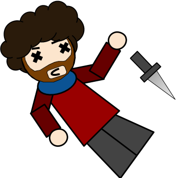

Being the titular character, Macbeth is the protagonist of his play despite being a very unlikeable person.
Macbeth really wants to be king. When Macbeth is unexpectantly named Thane of Cawdor (an important title), Macbeth sees this as his opportunity to take the throne. To improve his chances, Macbeth kills Duncan, King of England, as well as a number of other characters, including his best friend, Banquo.
Initially feeling guilty for his crimes, he grows apathetic thanks to his wife, Lady Macbeth, and arrogant thanks to the witches. His chain of murders is only stopped by Macduff, who beheads Macbeth during the final battle.
Go back